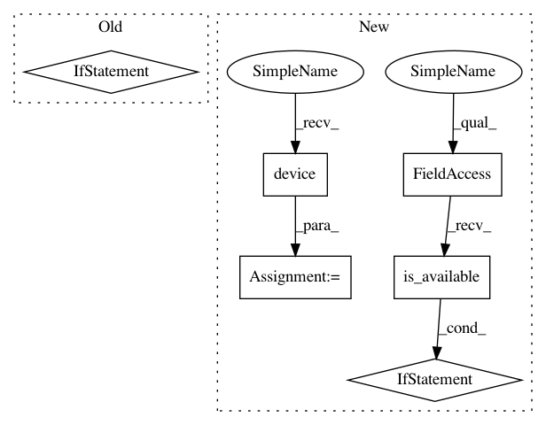

3d054be72e81af7acb1109028d7be4fceebae720,train.py,,test,#,58
Before Change
if X.size()[0] != config.batch_size:
continue // Drop those data, if not enough for a batch
// Send Tensors to GPU if available
if use_GPU:
X = X.cuda()
S1 = S1.cuda()
S2 = S2.cuda()
labels = labels.cuda()
// Wrap to autograd.Variable
X, S1, S2 = Variable(X), Variable(S1), Variable(S2)
// Forward pass
outputs, predictions = net(X, S1, S2, config)
// Select actions with max scores(logits)
After Change
if X.size()[0] != config.batch_size:
continue // Drop those data, if not enough for a batch
// automaticlly select device, device agnostic
device = torch.device("cuda:0" if torch.cuda.is_available() else "cpu")
X = X.to(device)
S1 = S1.to(device)
S2 = S2.to(device)
labels = labels.to(device)
net = net.to(device)
// Forward pass
outputs, predictions = net(X, S1, S2, config)
// Select actions with max scores(logits)
_, predicted = torch.max(outputs, dim=1, keepdim=True)
In pattern: SUPERPATTERN
Frequency: 3
Non-data size: 6
Instances
Project Name: kentsommer/pytorch-value-iteration-networks
Commit Name: 3d054be72e81af7acb1109028d7be4fceebae720
Time: 2019-12-31
Author: kelvinson@foxmail.com
File Name: train.py
Class Name:
Method Name: test
Project Name: kentsommer/pytorch-value-iteration-networks
Commit Name: 3d054be72e81af7acb1109028d7be4fceebae720
Time: 2019-12-31
Author: kelvinson@foxmail.com
File Name: train.py
Class Name:
Method Name: train
Project Name: kentsommer/pytorch-value-iteration-networks
Commit Name: 3d054be72e81af7acb1109028d7be4fceebae720
Time: 2019-12-31
Author: kelvinson@foxmail.com
File Name: train.py
Class Name:
Method Name: test
Project Name: havakv/pycox
Commit Name: b97635a12f49f8e1eaebcee30245ccb4e13a95c9
Time: 2018-05-05
Author: havard@DN0a22c81b.SUNet
File Name: pycox/torch_fitter.py
Class Name: FitNet
Method Name: __init__